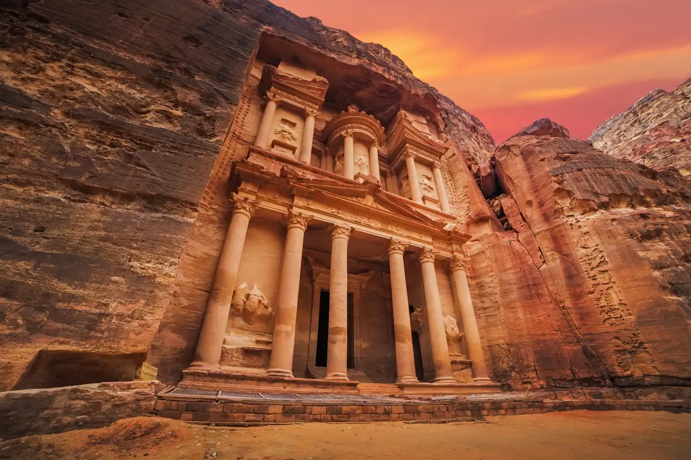
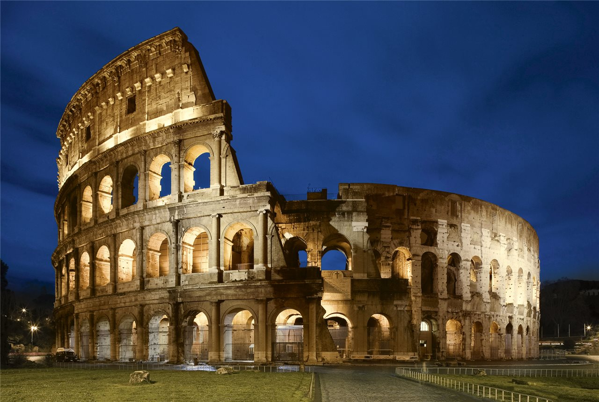

Siete Nuevas Maravillas del Mundo Moderno (2007)
1. Gran Muralla China (China)
La estructura más larga hecha por el hombre, con más de 21,000 km.
La muralla más extensa construida por el ser humano, con más de 21,000 km de longitud. Fue levantada para proteger al imperio de invasiones y hoy es símbolo de resistencia y grandeza.

2. Chichén Itzá (México)
Ciudad maya con la pirámide de Kukulcán, famosa por el efecto visual en los equinoccios.
Antigua ciudad maya que alberga la pirámide de Kukulcán. En los equinoccios, la luz crea la ilusión de una serpiente descendiendo, reflejando la avanzada astronomía de los mayas.

3. Petra (Jordania)
Ciudad tallada en roca rosada, con el icónico Tesoro.
Conocida como la “ciudad rosa”, fue tallada directamente en la roca hace más de 2,000 años. Su Tesoro es uno de los monumentos más fotografiados del mundo y muestra la habilidad nabatea.

4. Machu Picchu (Perú)
Ciudad inca en los Andes, símbolo de ingeniería y espiritualidad.
Ciudadela inca escondida en los Andes, construida sin hierro ni ruedas. Es un ejemplo de ingeniería y espiritualidad, rodeada de paisajes impresionantes y misterio histórico.

5. Cristo Redentor (Brasil)
Estatua de 30 m en Río de Janeiro, ícono religioso y cultural.
Estatua de 30 metros que domina Río de Janeiro desde el cerro del Corcovado. Ha sido alcanzada por rayos varias veces, pero sigue en pie como símbolo de paz y fe.

6. Coliseo Romano (Italia)
Anfiteatro de gladiadores, símbolo del Imperio Romano.
El anfiteatro más famoso del mundo, donde gladiadores y animales protagonizaban espectáculos. Tenía un sistema de ascensores y trampillas que sorprendía a los espectadores hace casi 2,000 años.

7. Taj Mahal (India)
Mausoleo de mármol blanco, construido en el siglo XVII como símbolo de amor.
Mausoleo de mármol blanco construido por amor en el siglo XVII. Cambia de color según la luz del día: rosado al amanecer, blanco brillante al mediodía y dorado al atardecer.